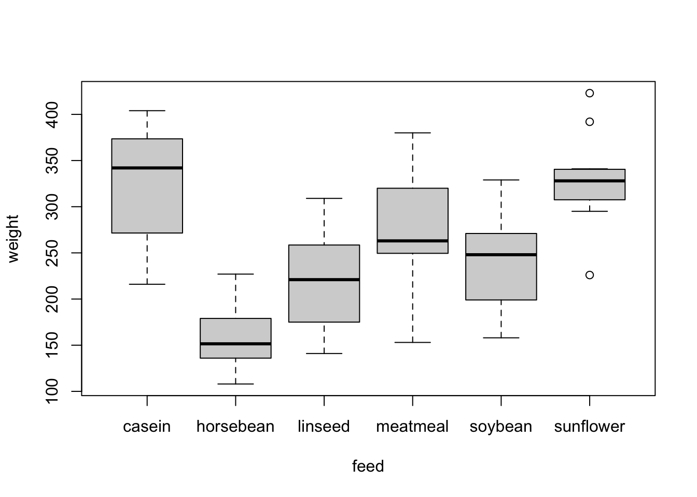
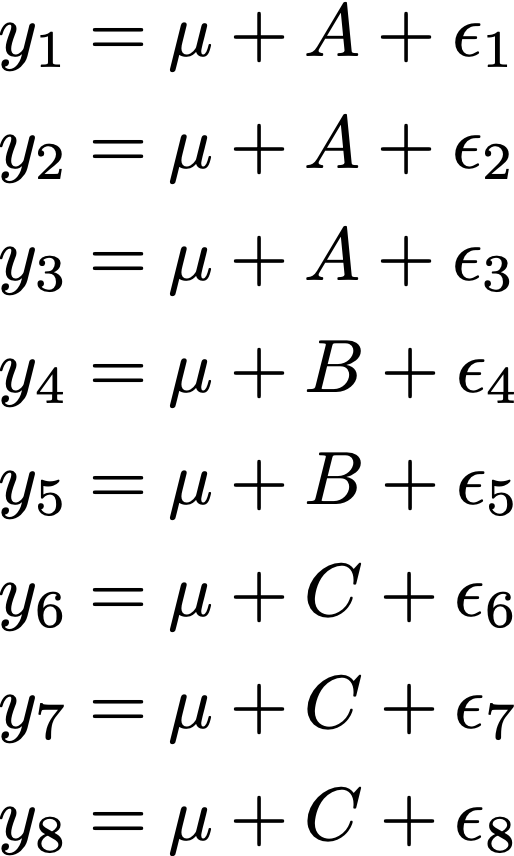
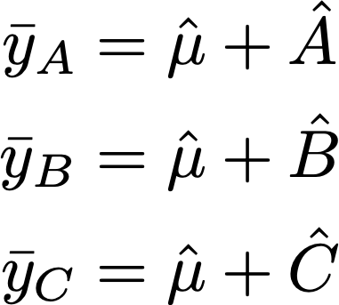
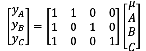
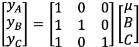

1 Factor coding
factor is R’s name for a categorical variable. Let’s see an example. The chickwts data set is built into R, and records the results of a 1948 experiment where chicks were fed on different diets, and their weights were measured in grams at six weeks of age.
# load the chickwts dataset and look at the top rows
data( chickwts )
head( chickwts )## weight feed
## 1 179 horsebean
## 2 160 horsebean
## 3 136 horsebean
## 4 227 horsebean
## 5 217 horsebean
## 6 168 horsebean# look at the feed variable - it's a factor
chickwts$feed## [1] horsebean horsebean horsebean horsebean horsebean horsebean horsebean
## [8] horsebean horsebean horsebean linseed linseed linseed linseed
## [15] linseed linseed linseed linseed linseed linseed linseed
## [22] linseed soybean soybean soybean soybean soybean soybean
## [29] soybean soybean soybean soybean soybean soybean soybean
## [36] soybean sunflower sunflower sunflower sunflower sunflower sunflower
## [43] sunflower sunflower sunflower sunflower sunflower sunflower meatmeal
## [50] meatmeal meatmeal meatmeal meatmeal meatmeal meatmeal meatmeal
## [57] meatmeal meatmeal meatmeal casein casein casein casein
## [64] casein casein casein casein casein casein casein
## [71] casein
## Levels: casein horsebean linseed meatmeal soybean sunflower# make a boxplot of weight vs. feed
boxplot( weight ~ feed, data=chickwts )
There are six different types of feed: casein, horsebean, linseed, meatmeal, soybean, and sunflower. Now see what happens when I fit a linear model to this data:
# create a linear model using the default coding, look at its summary
lm_default = lm( weight ~ feed, data=chickwts )
summary( lm_default )##
## Call:
## lm(formula = weight ~ feed, data = chickwts)
##
## Residuals:
## Min 1Q Median 3Q Max
## -123.909 -34.413 1.571 38.170 103.091
##
## Coefficients:
## Estimate Std. Error t value Pr(>|t|)
## (Intercept) 323.583 15.834 20.436 < 2e-16 ***
## feedhorsebean -163.383 23.485 -6.957 2.07e-09 ***
## feedlinseed -104.833 22.393 -4.682 1.49e-05 ***
## feedmeatmeal -46.674 22.896 -2.039 0.045567 *
## feedsoybean -77.155 21.578 -3.576 0.000665 ***
## feedsunflower 5.333 22.393 0.238 0.812495
## ---
## Signif. codes: 0 '***' 0.001 '**' 0.01 '*' 0.05 '.' 0.1 ' ' 1
##
## Residual standard error: 54.85 on 65 degrees of freedom
## Multiple R-squared: 0.5417, Adjusted R-squared: 0.5064
## F-statistic: 15.36 on 5 and 65 DF, p-value: 5.936e-10The casein feed isn’t shown in the results! And most of the feed types that are shown would give the chicks negative weights, which is clearly absurd. What gives?!
1.1 How factors are coded in a model
The short answer is that the intercept here is actually the average weight of chicks on the casein feed, and everything else is the difference from casein. So based on the first two lines of the result table, chicks on casein feed weigh 323 grams on average, and those on the horsebean feed weigh 163 grams less than that, or 160 grams. Those numbers shold make sense based on the boxplot.
But why are the results reported in such a weird way?
1.1.1 The linear algebra explanation
Imagine that your factor variable has three levels, and call them A, B, and C. You’re estimating how a continuous variable (like chick weight) depends on the factor level (like chick feed). You typically use an intercept to represent the overall average weight (aka the “grand mean”), so that you can then test whether any factor levels are different from average. This leads to a model where the grand mean \(\mu\) and the factor levels \(A\), \(B\), and \(C\) represent the average weights, with some random noise added in, too. That’s written like this:

This system of equations can’t be solved (too many unknowns) so we work with the average of each group (A, B, C). To do so, we assume that the average error is zero within each group, so the group means can each be written as the sum of the grand mean and the group effect:

Now we are down to three equations with four unknowns - close but not good enough! Another way to write that same system of equations is this, which will be a bit more productive going forward:

We have to reduce the number of unknowns by one. We do so by introducing a constraint on the coefficients, which allows us to remove a column from the “design matrix” in the figure above.
1.2 The default
By default, R will drop the column that represents the first level of each factor. This is called a “treatment contrast” (more on contrasts later) or the set-to-zero constraint (because it is like constraining the \(A\) effect to be zero):

Now we’ll look back at the model summary table, where the “first” level of the factor (casein) doesn’t appear. That’s because it is set to zero in order to estimate the model. Since casein is swept into the intercept, we find the average weight of a chick fed on horsebeans by adding the (Intercept) and feedhorsebean coefficients, as you would predict from the design matrix of the set-to-zero constraint:
# look again at the summary table for lm_default
summary( lm_default )##
## Call:
## lm(formula = weight ~ feed, data = chickwts)
##
## Residuals:
## Min 1Q Median 3Q Max
## -123.909 -34.413 1.571 38.170 103.091
##
## Coefficients:
## Estimate Std. Error t value Pr(>|t|)
## (Intercept) 323.583 15.834 20.436 < 2e-16 ***
## feedhorsebean -163.383 23.485 -6.957 2.07e-09 ***
## feedlinseed -104.833 22.393 -4.682 1.49e-05 ***
## feedmeatmeal -46.674 22.896 -2.039 0.045567 *
## feedsoybean -77.155 21.578 -3.576 0.000665 ***
## feedsunflower 5.333 22.393 0.238 0.812495
## ---
## Signif. codes: 0 '***' 0.001 '**' 0.01 '*' 0.05 '.' 0.1 ' ' 1
##
## Residual standard error: 54.85 on 65 degrees of freedom
## Multiple R-squared: 0.5417, Adjusted R-squared: 0.5064
## F-statistic: 15.36 on 5 and 65 DF, p-value: 5.936e-10